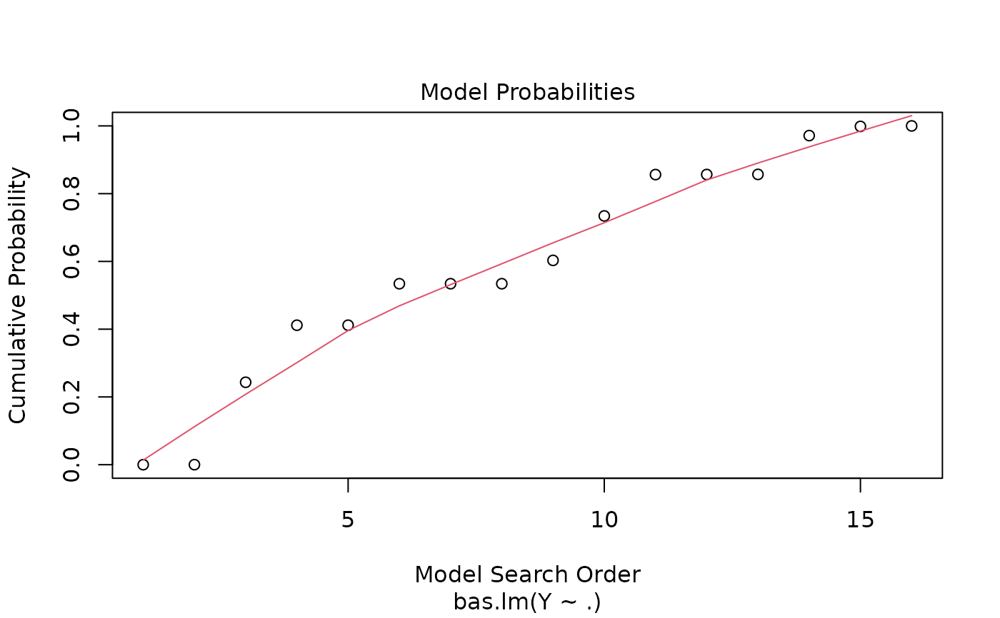
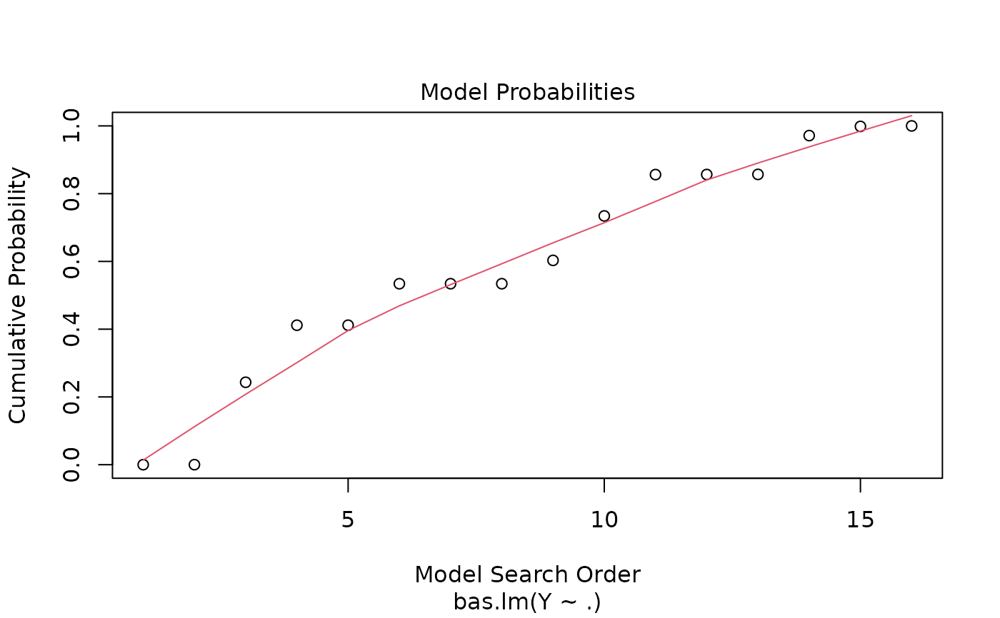

Four plots (selectable by 'which') are currently available: a plot of residuals against fitted values, Cumulative Model Probabilities, log marginal likelihoods versus model dimension, and marginal inclusion probabilities.
Usage
# S3 method for bas
plot(
x,
which = c(1:4),
caption = c("Residuals vs Fitted", "Model Probabilities", "Model Complexity",
"Inclusion Probabilities"),
panel = if (add.smooth) panel.smooth else points,
sub.caption = NULL,
main = "",
ask = prod(par("mfcol")) < length(which) && dev.interactive(),
col.in = 2,
col.ex = 1,
col.pch = 1,
cex.lab = 1,
...,
id.n = 3,
labels.id = NULL,
cex.id = 0.75,
add.smooth = getOption("add.smooth"),
label.pos = c(4, 2),
subset = NULL,
drop.always.included = FALSE
)Arguments
- x
basBMA object result of 'bas'- which
if a subset of the plots is required, specify a subset of the numbers '1:4'
- caption
captions to appear above the plots
- panel
panel function. The useful alternative to 'points', 'panel.smooth' can be chosen by 'add.smooth = TRUE'
- sub.caption
common title-above figures if there are multiple; used as 'sub' (s.'title') otherwise. If 'NULL', as by default, a possible shortened version of
deparse(x$call)is used- main
title to each plot-in addition to the above 'caption'
- ask
logical; if 'TRUE', the user is asked before each plot, see 'par(ask=.)'
- col.in
color for the included variables
- col.ex
color for the excluded variables
- col.pch
color for points in panels 1-3
- cex.lab
graphics parameter to control size of variable names
- ...
other parameters to be passed through to plotting functions
- id.n
number of points to be labeled in each plot, starting with the most extreme
- labels.id
vector of labels, from which the labels for extreme points will be chosen. 'NULL' uses observation numbers
- cex.id
magnification of point labels.
- add.smooth
logical indicating if a smoother should be added to most plots; see also 'panel' above
- label.pos
positioning of labels, for the left half and right half of the graph respectively, for plots 1-4
- subset
indices of variables to include/exclude in plot of marginal posterior inclusion probabilities (NULL).
- drop.always.included
logical variable to drop marginal posterior inclusion probabilities for variables that are always forced into the model. FALSE by default.
Details
This provides a panel of 4 plots: the first is a plot of the residuals versus fitted values under BMA. The second is a plot of the cumulative marginal likelihoods of models; if the model space cannot be enumerated then this provides some indication of whether the probabilities are leveling off. The third is a plot of log marginal likelihood versus model dimension and the fourth plot show the posterior marginal inclusion probabilities.
See also
plot.coef.bas and image.bas.
Other bas plots:
image.bas(),
plot.coef.bas()
Examples
data(Hald)
hald.gprior = bas.lm(Y~ ., data=Hald, prior="g-prior", alpha=13,
modelprior=beta.binomial(1,1),
initprobs="eplogp")
plot(hald.gprior)
 
